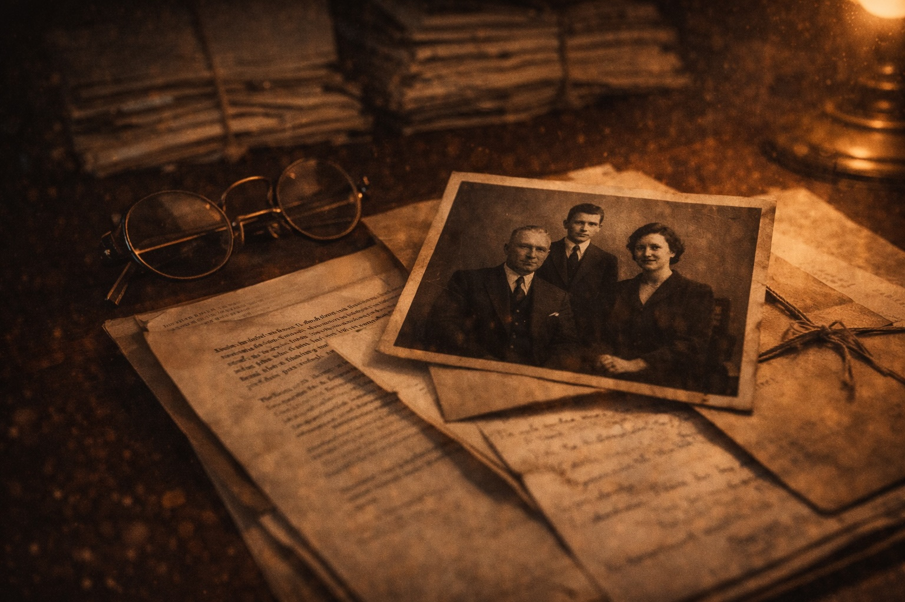

Having written these snapshots of my criminal sorties, I have learnt that I am the product of my father, Douglas Harry Green. My childhood brought me little comfort, and a good deal of violence. Safety was absent within the family home, and at Rossall Junior School. Hence the omission of my childhood from this book and, to a large extent, from my memory.
The best example of just how dysfunctional the Green family are can be best conveyed by my attempts to contact Barbara, my birth mother. She had the good fortune to sod off before I could walk, or I may well have joined her. Barbara had become disillusioned with her Blackpool playboy, and fed up of finding knickers shoved down the back seat of his Bentley.
We had had sporadic contact, but, since aged six, nothing. Silence. By my early 20s, I resolved to speak with her, if only on the basis that Harry had set a low bar in parenting skills. When I was a bairn, my grandmother would caution: “If you see the witch, just run away from her.” Advice I have yet to read in books on parenting and the nurturing of children.
My route to Barbara was via a dotty but lovable relative, Edna. A good woman who I knew would keep my search to herself. After all, God forbid a father should find out a child is attempting to find his mother. Edna had a love/hate relationship with my dad as she would, on the rare occasion she wafted into our lives, be verbally abused by him. It was all meant to be in high jinks, but it always ended up on the wrong side of funny.
Edna’s land line was picked up.
“Hello?”
“Hi Edna, it’s Nick, Dougie’s son.”
“Oh, hiya Nick - ooh, Dougie is a right bastard.”
No one has ever announced ‘bastard’ with as much gusto as Edna, who hailed from Moston [Manchester]. It flew from her lips, exploding into the air. After a few more reminiscences, none in my father’s favour, I enquired:
“I am trying to find Barbara, do you know where she lives?”
“Not sure, Nick, as I only kept in touch with Joyce.”
My heart skipped a beat. Who the fuck was Joyce? Edna was ranting on, so I pulled her back:
“Edna…Edna…who is Joyce?”
“Dougie’s first wife.”
This was said matter-of-factly despite, in my 20-odd years roaming the earth, I believed Barbara to be my father’s first bride. Only I, upon hunting down my mother, could uncover another wife.
“Where is she?” I mustered.
“Oh, Nick. She was shot dead by her son years ago.”
This phrase is seared on my brain. Did the murderer have my DNA? Were there more half-brothers and sisters? I was fortunate to learn Joyce’s offspring was sired by another man. Before the call ended, I had been given leads by Edna. Names and numbers of individuals who would likely secure a reunion. As I hung up the phone (which we did in those days) I sat for some time in stunned silence. In time, this conversation would cause howls of laughter, but in real time it was shocking. I may even be able to win a scrabble game with the deployment of ‘matricide’. To the cries of “What’s that?!” I would announce: “You really do not want to know.”
I end this trip down - or up - our family tree by relaying my first call to my mother after I had tracked her down:
“Hello” a soft female voice announced.
“Hi. Is that Barbara?”
“Yes, it is. Who are you?”
“It’s Nick,” I replied, choking with emotion. The reply was not all I had dreamt of.
“Nick who?”
I was later to learn, after divorcing Harry, that she had given birth to another child (her fourth) and promptly had it adopted. On reflection, “Nick who?” was a reasonable response. When I had established my lineage, and the fact I had suckled on her breast, she announced:
“Oh, I am so pleased - I really want to see Douglas” - Douglas being my eldest brother.
I had watched films and television programmes, and reunions were meant to be uplifting, momentous occasions. This one had hit the bottom of the barrel. I had bonded better with Joyce.
Unlike my absent mother, regretfully my dad was a constant presence. Governed by his desire to accumulate money, his kids came second best. His phrase ‘he’s a dolly daydream’ captured his dislike for any individual who drifts through life without drive and ambition. Someone who accepts ‘no’ for an answer and waits patiently in line.
The judiciary can testify to me discharging this parental instruction. Unlike Harry, the Fylde coast of Lancashire was never going to contain me as it did the Irish Sea. By the age of 21, I had secured employment in Leeds. I was not to return to the area until I was 56, and now reside in the rarefied atmosphere of Lytham.
After a spell in the staid sanctity of domestic conveyancing, I found my footing within the criminal law. I was off and running, on a one-man mission, brain ablaze. A barrister I instructed, Sandy Monroe, referenced me, at the height of my powers, as ‘a force of nature.’ Monroe, I would learn, committed suicide, along with Eamon Sherry, whose offer of a fist fight outside a Manchester club I once had the pleasure of accepting. When I learnt of these deaths, I was with Chris Harding. I asked him, if the bar were to commit hari kari, could I submit a list of my preferred order of funerals? Chris, used to my humour, enjoyed this morbid revelry.
It is fair to state that I had exited my childhood as an unrounded, damaged individual, but never willing to give an inch, or follow the crowd. I learned that owning a good ‘belly-button’ was far and away more beneficial than IQ. Many in the profession can cite more detailed case law and statute than I, but none can deploy it better - the capacity to swiftly realise one’s opponent’s weak points, then rain blows upon them mercilessly. The ability to change course, to tack, as the winds shift in Category A cases. As I have learnt from Peter Fury, to be ever vigilant for movements in your opponent, be it a shoulder dip, a head movement, a twist in a fist - telltale signs for a fighter wanting to be one step ahead in the ring. Do not be caught on the ropes, and maintain eye contact.
In criminal prosecution, this is deployed by setting one’s course early, before the case papers have been served, enhancing it with defence case statements, and with a litany of focused requests for disclosure. In oral hearings, it is about leaving ticking time bombs, to be exploded when the moment is right. Ensuring transcripts of the hearings are obtained lest the opposition, and trial judge, have memory loss when asked to recall their comments.
I am building my case in the dark, guided by my belly-button, which has been fine-tuned over a 30-year career. The younger you come out of the traps, and face the opposition down, the quicker the learning curve. There may be camaraderie and safety in the shallow end, but none of these chapters have been written from the comfort of the infinity pool. Most of my profession excel in the baby pool, buoyed by armbands which change colour as they learn the strokes of their peers. No-one can guarantee results (save for informants), but one can discharge one’s duties without fear or favour. Never take a backward step, and as ‘no’s’ ring out, continue undeterred. At Rossall, I learnt from England flanker Peter Winterbottom how he accelerated into tackles, as us mortals stalled for the inevitable fall to terra firma, usually in the mud and driving rain.
I will now recount three murder cases. To demonstrate the son of Harry, in battle gear, pushing boundaries, seeking paths less travelled, or using a machete to enable me to make my way down new ones.
Angle 1 - Somali
At the height of my powers, I was coveted by a Somali locked up in Strangeways (Manchester) for a brutal murder. I had around six Cat A prisoners in HMP Manchester, and so was not looking for new work. Yet he was persistent, and the son of Harry rarely turned down cases. He was on the ‘normal’ wing, so I booked to see him for 30 minutes on my way to Cat A. I found him engaging and, as is often the case, could not marry the pathologists’ pictures to the man with whom I was conversing. However, I realised he was heading for a 20-year minimum sentence if he wandered into trial claiming self-defence. This was the strategy of his Manchester legal team, despite the deceased having 10 stab wounds and my Somali friend requiring no hospital treatment. There were no injuries consistent with even fending off an attack. The sad reality was that the trial was due to commence in three weeks, and the outgoing firm, as normal, would not depart willingly. I told him the mechanism for cutting through the niceties, and for the need for him to write directly to the judge.
Off I wandered to Cat A, but my belly-button pounced upon one matter. The Somali had, in passing, informed me that he had been an abuser of khat, a flowering plant native to the Horn of Africa and Arabian Peninsula. When I returned to my car close to the visitor centre, I called my colleague Bob Telford, and asked him to find out as much as he could about khat and its side effects.
While legal in certain nations, including Somalia, the World Health Organisation classified it as a drug of abuse. At its worst an individual can develop khat illness, which can result in a psychotic episode resembling a hypomanic state in presentation. If you feel my recollection dating back 15 years is exceptional, fear not. I culled this from Wikipedia.
“Find the leading expert in the country”, was my short instruction to Telfordo. This expert was tracked down, and I spoke with him. He was an amiable man, who seemed unconcerned about the multiple stab wounds. In fact, this supported the presence of psychosis at the time of the murder. I smile when I note that Wikipedia states that khat can produce a ‘mild to moderate psychological dependence, less than tobacco or alcohol’. But who am I to lecture the leading expert, who was keen to evaluate my Somali in HMP Manchester?
The client learnt of my dalliance with this expert, and used it, to good effect, to have the trial judge transfer the legal aid order to Nicholas Green Solicitors. The outgoing firm had to acknowledge, in their eight months’ conduct, that this route had not been explored. Hey ho! My belly-button was alive with the knowledge that, if my khat expert came up trumps, the opposition would be in difficulties. Khat psychosis was a limited field, and the Crown would be left instructing an expert lower down Food Chain.
And, so it came to pass, in short order, that the report landed on my desk. I flicked through it, as my only interest was its concluding remarks. These were that, although the expert could not be certain (no expert could be), his opinion was that my Somali friend had been suffering from a psychotic attack at the time of the frenzied attack. We were no longer in the nonsense of self-defence, and the Crown duly instructed their own expert, who, as I expected, dovetailed into the leading expert’s opinion.
All this had happened within 14 days and, on the due date for the trial, the Crown Prosecution Service laid an indictment for manslaughter. To this my client entered a firm ‘guilty’ plea, and the murder charge was withdrawn. The judge, in passing a six-year sentence, found himself praising the quick and effective work of Nicholas Green Solicitors, even if this was drowned out by wails of anguish from the deceased’s family in the public gallery.
Angle 2 – audible cry
In another murder case, once more before Manchester Crown Court, I was defending a man whose home had come under attack in the small hours. He was alleged to have exited the house and, in the ensuing melee, had stabbed the victim who later died in Stepping Hill Hospital.
Juries have a difficult task in such cases, given that they are the ultimate deciders of fact. When there is a dead body, and a grieving family, there is tendency to desire someone to be held accountable. The burden of proof, which rests with the Crown throughout, is easily forgotten in this endeavour. After all, they are the good guys, aren’t they? My client is in the dock, isn’t he? Nevertheless, we had a good starting point, as the Crown would be unable to avoid the fact that the deceased, and his cohorts, were the initial aggressors. It may have been Christmas time, but these folk had not come to sing carols on my client’s doorstep. There were sleeping children upstairs.
Juries are drawn from everyday people, who can fully relate to the fear that my client, and his family, must have felt that night. There was more than an overtone that drugs, and their supply, may have formed the backdrop to the night’s events. Nevertheless, the murder had occurred 100 yards from my client’s marital home and his stature, and demeanour, did not suggest a man easily intimidated.
My belly-button sensed that telephone evidence would be important for us to deploy before a jury. The police, given their mentality, would avoid it like the plague, as it could only be relevant to the contacts and movements of the deceased and his gang of allies. Who had called who in the run up to the murder? Whose cell site data would show movement to my client’s address? Who, claiming to be present, was not, and who had departed in the night without giving any details?
I sensed this could be the Crown’s Achilles heel and, as I am one to listen to the nominations of the Lord Chief Justice (in R v McDonald), I knew I needed to openly lay the trap. I could not remain silent, or the Crown would hammer home ‘the conduct of the defence’, which the Lord Chief Justice had ruled was a factor in a court agreeing to extend the custody time limits. This is intellectual dishonesty at its height, but those folk on The Strand dish it out, without prescription, daily.
Forewarned is forearmed, and given it was ‘my’ case law, I was content to ensure I heeded the Lord Chief Justice’s guidance. Hence a letter was sent, by me, to the Crown Prosecution Service, in advance of the case papers. It was purposefully coy and innocent. It covered several non-contentious matters, but within it was a clear direction to secure, and serve, all available call data records. The Lord Chief Justice wanted the defence to be pro-active. I obliged, knowing that the letter, in an overworked Crown Prosecution office, would be filed and ignored. Better to counteract any suggestion that it had not been sent (God forbid), so I copied the letter to the trial judge for transparency’s sake. Why lay one bomb when you can lay two?
The custody time limit bomb, diffused by the Lord Chief Justice in R v McDonald, was back ticking. The papers were served late, although I did not aggressively request or chase them. And, lo and behold, there were no call data records. However, it was recorded that mobile phones were seized at the scene, and from individuals seen by the police. The mobiles had been interrogated, but no interrogation reports were supplied to us. The police had played out their role perfectly, and worse, instructed the Crown’s QC that a pursuit of such data was a red herring - a device to delay the trial and put the police to unnecessary work.
By the time this exploded in open court, I had served a defence case statement placing the contacts and movements of the Crown’s witnesses and absentees at the heart of the case. There was no time to carry out this work prior to the fixed trial date, and the Crown’s QC attempted to bluster his way through the defence requests. What relevance was the phone evidence, one hour before the killing? How could that affect the Crown’s forensic evidence and eyewitness accounts?
The trial judge was not fooled, given that the corralling of armed attackers, prior to the incident, was patently relevant. Especially when, naturally, the Crown witnesses were keen to downplay any suggestion of a prior motive, or prior communications, before their journey that Christmas night.
The QC then indicated that the Crown were not mind-readers, or soothsayers, and hence this difficulty had been caused by the defence in failing to state its case early on. At this, the High Court judge could be seen waving my letter at the Crown’s QC. The QC was informed of the date of the letter, and its content vis-à-vis phone data. He turned to look at his junior, who was in frantic communication with the reviewing lawyer. After a minute, the offending letter was found in the Crown Prosecution papers, and within 20 minutes bail conditions were fixed, together with a new trial date.
We could now prepare for the jury trial, at our leisure, and my client could attend my offices to give instructions. In time, the call data records were produced from the various telephone companies, which included numbers that we believed were important. This time, our requests were taken on board, and we could plot the lies and deceit contained within some of the Crown’s central witnesses to the murder. It was not a knockout blow, but it would be important for my defence counsel to walk the jury through, and relevant to the fact that they were only viewing them because of the tenacity of the defence team.
My counsel was Dominic (Dom) D’Souza or ‘D’Snoozer’, as we had by then christened him, given his penchant for nodding off or going missing for days. At this stage Mazher Mahmood’s insights into the nocturnal activities of my counsel had not surfaced. I was unaware of his work without Archbold in his hand.
The relationship only worked if I carried out all the duties and put up with the vagaries of an absent barrister. Nevertheless, I knew that if I loaded the pistol, Dom would fire and hit the target in front of the jury - especially the female ones. The Crown’s case hinged on forensics, which we could do little to counter, and whatever CCTV footage existed showed our hero had been up for the fight, even if he had not called for it.
The subsequent turn of events was bizarre but brilliant. The fee earner working on the file, who had taken up the cause, had worked tirelessly with the client. Furthermore, she had pored over the grainy CCTV, and recovered from the police other CCTV from further down the street. Although this did not capture the murder, it did contain audio. The audio was garbled and mainly contained screams. At least that is what the police, the Crown and I thought. Yet the fee earner attended one day clutching a pair of headphones, and requested that I listen to a short extract. The timings showed that this was, as near as damn it, at the moment of the fatal stabbing. I could not make out much, but I could hear the shout of a female over the hubbub. On being prompted, I listened again. I was then asked to listen without the headphones. Then, when on full volume, I thought I heard:
‘I am not going to prison for him.’
My eyes glanced at the fee earner, and we both smiled. It was far from clear, but it could be made out. Other employees listened. Some heard it, some didn’t. Yet, as with these things, the more it was replayed, one’s mind was ready for it, and it seemed to become clearer. The point was that this cry was from my client’s wife, and it would mean me confronting him as to the possibility of his wife being a murderess! This was not something I had auditioned for at law college, but as the son of Harry, it would need addressing with my client.
“Fuck off, Nick”, was his first quite clear and curt response. With me giggling, it at least lightened the atmosphere. And on hearing the evidence he, importantly, did not disagree that it was:
His wife.
The phrase we had heard.
I talked him through the scenarios, in the full knowledge D’Souza wanted this in his quiver at Crown Square in Manchester in a few weeks’ time. I needed to persuade my client that the Crown would not drop the charges against him, as they would not recast their case. Furthermore, they had no interest in his wife going to prison.
Rather like the Fury chapter (page xxx) and the firearms, this would not play out well if I called it wrong. Unlike the Fury escapade, I had brought this situation about myself - my hands were on the tiller. I did not waver and, over the next few days, the client calculated that we should deploy the audio. I was ably assisted by Arran Coghlan, who had recommended the client to me initially, and who loved the daring in my proposal. Arran, more than anyone, knew that all the prosecution would do was disparage the garbled audio.
Hence, my urgent new defence case statement was served on the Crown, and Lord only knows how the reviewing lawyer’s heart reacted to the assertion that my client was innocent, but his betrothed guilty. It must remain a first, especially as my client’s bail address remained as the marital home.
D’Snoozer knew he could play out my client’s lies to date as the natural reactions of a husband protecting his wife. An act every one of the eight male jury members would do. In the hands of lesser counsel, it would have been shite - in fact, I would have heard the mantra, ‘Mr Green, Mr Green, Mr Green…..’ ringing in my ears. No doubt I would have had my code of ethics referenced. For Dom, it just added spice and theatrics.
My belly-button played its part as, unlike Angle 1, I decided to forego an expert. I knew the leading authority - the ‘go to’ audio expert for the police in grave crimes up and down the land - and I did not like him. Again, I sought Dom’s opinion, and he agreed. ‘The jurors have ears, let them hear it, and make their minds up, Nick.’ Once more, this was a bold move, but it worked like a dream. Off the police went, to their favourite expert over the Pennines, and within days his report landed.
The dear old professor, who Dom and I knew the jury would dislike, heard an entirely different phrase. Our failure apparently was to misunderstand the Mancunian accent! We smiled when we realised this would mean the professor, who sported a Biggles-type moustache, would be left insulting all 12 members of our jury.
I, upon reading the report, breathed a huge sigh of relief, knowing my client’s wife would not be facing 20 years behind bars. If, that is, I would have been above ground long enough to witness that prosecution. Dom, at trial, was in his element and had the High Court Judge agree that in no way were the jury bound by the professor’s findings. The Crown, of course, tried to cut the legs from under us, given that we were not relying on an expert witness.
The Crown’s stupidity, no doubt egged on by the police, was to not leave the audio well alone - it was unclear and equivocal anyway. Grandstanding on it played into Dom’s hands. It became more pivotal than the forensics! Good belly-buttons are, after all, worth their weight in gold.
Dom had laid bare the suggestion that the Crown’s witnesses had happened, by chance, to descend upon my client’s sleeping family. The jury smiled at the timeline we had drawn up (agreed by the Crown), illustrating the contacts and movements, in concert, by the deceased and his gang.
The piece de resistance came when the Crown’s audio expert fell on his arse in cross examination by the awakened and alive D’Souza. As with Biggles, he headed south rapidly. Dom tormented him, as a Yorkshireman telling a Manc jury what they should hear, inflections and all. In addition, just as the snippet became clearer with repetition within the office, so it did in the courtroom. We had dragged the case away from DNA into a battle for dialects in the wee (Scottish) small hours (English) of the mornin’ (Irish).
Our hero played his part, as he was loathe, even before the jury, to blame his wife. Dom was almost cross-examining his own witness, which is not allowed in an English Court. Yet every man on the jury knew how my client felt, and the women loved him for it - a unanimous ‘not guilty’ verdict, aided by our High Court judge replaying the audio snippet in the course of his summing up. It had never been clearer, and the jury members smiled at each other in recognition of the famous phrase.
When the foreman of the jury announced his verdict, it fell not on deaf ears. The public gallery erupted and items, including mobile phones, were hurled at the glass-encased dock. Threats to kill filled the courtroom. Worse, those aggrieved by the acquittal headed into the belly of the court. The trial judge scarpered stage left and D'Souza scrambled over the court clerk’s bench in an effort to keep his good looks intact. The police, who had been on the concourse, stormed in to quell the mayhem. D’Souza and his junior were syphoned into a side room and, for their own safety, remained out of sight for 30 minutes. I had missed the kerfuffle, as I was working from home, but smiled when a police car entered my driveway later to drop off my learned friend. ‘Well, Dom, that's a first...an escort!’ ‘Just open the champagne, Nick.’
At the same time, my client was returning home a free man, into the loving arms of his murderous wife, and they lived happily ever after - he being unable ever again to utter from the safety of his armchair: ‘What was that you just said?’
Angle 3 - Stupefaction
I now relay a murder case at Sheffield Crown Court, in which a man was killed after my client and his family had journeyed in a minivan to confront a local drug dealer. In the ensuing melee, an associate of the drug dealer was stabbed to death.
Unlike Angle 2, on any view my client’s family were the aggressors, and attended armed and mob-handed at the drug dealer’s house. As was often the case, I had been instructed to act shortly before the fixed trial date, when a local firm bit the dust.
On assessing the evidence, it was unclear if my client, the youngest son, had exited the minibus, whether indeed he had been in it at all, or if he had an alibi. The defence was in disarray, which stemmed from my client’s confusing, conflicting accounts during the police interview. It was, however, plain that at least one other family member had served a defence statement, claiming that my hero had joined the fray.
The Crown, as is their wont, had indicted father and sons in a ‘conspiracy to murder’, making it a side issue as to which family member landed the fatal blow. It had been a joint enterprise, with weapons brandished.
In my second conference in prison with my punter, I assessed him as a likeable young man, but entirely stupid. He was happy to converse with me, but rarely answered the question I had posed - not out of deviousness, just ignorance. There was no question in my mind that the client was fit to plead, as I did not sense any mental illness. In any event, I can count on one hand the times in my 30-year career that a psychiatrist had opined a client of mine being a ‘nutter.’ The reality is that they shirk their responsibilities, and would rather the criminal system process and lock up the offender. So, there was no merit in me using a machete down that jungle path, as it led nowhere.
D’Souza was instructed once more and, as with every other client I gave him, he never managed, pre-trial, to clasp eyes on the defendant. Rarely through the trial, save from the dock he, as always, simply relied upon me to wrap the case up in a pretty bow, tell him the angles, and off he would launch.
The legal eagles among you might wonder why a junior counsel was being instructed on murder cases, and not a QC - given that a client, once charged with murder, is entitled, as of right, to the services of a QC. The simple fact was I did not trust a QC to carry out their instructions, and I was, in any event, running out of ones I had not sacked. D’Souza was far from ideal, but he was a straight hitter provided I propped him up. Pre-trial he would be largely absent, but at trial the beast inside him was sparked into life. He was a bright cookie, owning a belly-button to boot.
Most juniors would refuse a murder brief for fear of being criticised at an appeal court for leading the case, rather than passing it on to a QC. This, after all, is how the baby pool works. D’Souza is many things but being unsure of his innate abilities is not one of them. I was, therefore, happy to instruct him, and he would be assisted by a fellow (female) counsel used to his nefarious ways.
What angle would I supply D’Snoozer, in this shocker of a case only weeks away? Stripping the case for the Crown away, it was plain my punter was tail-end Charlie. He was rarely mentioned in the prosecution case and, as I have indicated, his movements on that night were open to debate.
I needed to wrong-foot the Crown and utilise my recent instruction to our advantage. I required a jury to understand that if my client was crap in the witness box, this could be largely due to his stupidity, not lies. I accept that this was not a flag which could unfurl in wonderment above the Crown Court in Sheffield, but needs were must.
I would have my client assessed by an expert, with my eyes fixed on a prize which might be within my grasp - the exclusion of my client’s police interview. If he turned out to be, in medical terms, ‘at risk’, then he should not have been interviewed without an appropriate adult being present. A lawyer had conducted the interviews, but this was insufficient if he was assessed as ‘at risk.’
When D’Snoozer eventually answered his mobile, he agreed to this course, and agreed with what we should openly state to the expert - that we were not suggesting our client was unfit to plead. This would give us Brownie points with the High Court trial judge, as we could not be seen as ‘trying it on’. We would be, purposefully, attempting to tread at a much lower rung on the ladder. My belly-button also led me to instruct an expert who was both a psychologist and psychiatrist, knowing this would carry weight. I would be hedging my bets.
I had in the past had psychiatrists deploy the ‘Gudjonsson Suggestibility Scale’ test, which exposes if a client is both dim-witted and liable to give false answers, because they believe that is what those questioning want him to say. I was able, in advance, to tee up the expert with the difficulties I was encountering in obtaining instructions, and explaining the likes of ‘conspiracy’ to my client. Within days, the expert had travelled from London to see and assess the inmate. The report trawled through the Yorkshireman’s sad life. He could barely read or write, and was borderline subnormal. Critically, he was assessed as ‘highly susceptible’ on the Gudjonsson test, the doctor adding that he was unsure if my hero would be able to properly understand, and hence participate, in the trial.
Perfect! Dom loved it, and it was immediately served upon the Crown and the court. There could only be criticism of the outgoing firm for not having assessed and dealt with this in the eight months they held the legal aid order. We were the good guys, once more, and the Crown had no time to reflect on and deal with the defence report, as we were at trial within a week of its service.
The Crown’s QC attempted to intimidate D’Souza and bring him to heel, given that the slot allotted to this trial at Sheffield was tight. A High Court judge had also been nominated. Dom stood firm, and correctly assessed that the problem was now the Crown’s. After all, the QC was not for one second going to agree to the binning of our client’s police interviews, which were plainly of help to those who prosecuted. It rapidly became obvious that our client would have to be severed from the trial, especially as the judge was anxious to protect the client’s well-being, even though it stemmed from stupidity, not mental anguish. This alone meant that the co-accused’s versions, some with my client present, would now form no part of the Crown’s case when we reconvened for our trial.
A highlight came when the counsel for the father sidled over to Dom and indicated, in a conference in the cells, that the father had stated: ‘But he is the brains of the family!’ This might have been true, but without expert reports, the others were headed for jury trial. Within three weeks, all were convicted of the murder.
We were then invited back to mop up tail end Charlie and, as I had hoped, although the Crown were still bombastic, the main event had happened. Furthermore, my client could be assessed in all his subnormal glory. He had never invited me to ascertain his inadequacies, or the fact he was a ‘dolly daydream’, but the tag would remain for the rest of his days.
One event had occurred which was a real and present difficulty; our client had been called by the father’s team to testify at the jury trial. The lunatics had, for certain, taken over the asylum in central Sheffield. Which muppet would call a witness who was medically recorded as being unreliable, stupid and easily led? A man who was not a full shilling, and was likely to give confusing, misleading answers to questions posed? No doubt, the defence team were doing some heavy lifting for their prosecution brethren, for when we were called back to court.
It was a big call for us, but Dom and I decided not to instruct our client to remain in his cell. He wanted to testify, and it would be tactically important for the judge to know that we were not seeking to protect him from the rule of law. The reality was that it would be the Crown’s problem, not ours, and we ensured that we posted a letter to them (copied to the High Court judge), reminding them of their duty to protect our client’s interests, and be conscious of the findings in our expert’s report.
Unfortunately, it was reported to us that our client had given evidence well and had withstood a two-hour cross-examination from the Crown’s QC - perhaps more a reflection upon the bar than the accuracy of the Gudjonsson test.
“Then there was one, Mr D’Souza”, the judge correctly averred, upon reconvening in Court 4. We ensured that our highly qualified expert was in Sheffield, able to testify, as there would be applications in the absence of a jury. In the intervening period, Dom and I had submitted a skeleton argument to the Crown and the court which, in essence, stated ‘Mr ‘X’ is too stupid to stand trial.’ Before we entered Court 4, the Crown QC waved Dom’s skeleton under his nose seething: ‘You are not honestly going to lower yourself with this argument before Justice Grigson?’
We were, and we did, and by turning our backs on the QC, we both hoped his higher-than-thou dismissive tone would be his approach in open court. The reader need not know the law, for a very good reason. In the Archbold index (for any year), there is no ‘S’ for stupidity to be found. Nada, rien, zilch. Fuck all. There were the McNaughton rules, which every first-year graduate learns, and which relate to madness. There is a little more as to “fitness to plead”, but plain, ordinary, prevalent stupidity is not catered for. Parliament had never been troubled to emit such legislation and, until their date in the Sheffield Crown Court calendar, no judge had been inconvenienced to proceed to a formal ruling.
Dom’s skeleton was simply grounded upon ‘justice being seen to be done’, on the European jurisprudence of a man having to receive a fair trial - albeit, turned into a stupid man can not! The absence of wind, to fly our ‘stewmer’ flag, being covered by (you guessed it), “if the law demands something to occur, a way must be found.” We were asking for a little gust from on high, and it seemed Justice Grigson, by his smiles, had warmed to this outlandish, bold application - Dom delivering it not as an apology or ‘upon client’s (or Nick Green’s) instruction’, but rather with the due deference ‘stupidity’ warranted. In front of a Crown Court judge, Dom would have been cut off at the knees at the outset, but we knew Justice Grigson - used to grave and weighty matters - would give this application a coat of paint. They hear enough dross on a daily basis, so this departure into pastures new, by a clever counsel, was well received. Even more so when, as we had hoped, the Crown QC was dismissive and rude. Rather than guiding the judge to the fallacy of our approach, he found ‘a ruling in favour of the defence could have every stupid defendant, up and down the land, avoiding the consequences of his actions.’
Enter the expert, who took the oath and was brilliant. Down to earth and able to respond, with care, to questions posed to him. We knew the Crown’s knockout blow was to come, and it did when the QC sought to trash the expert’s view, given the performance by our client at the earlier trial. ‘But that is where extra care is needed, it magnifies the problem and endorses my findings - stupid people can be very convincing’. A masterclass and a masterstroke. Did I imagine a wry smile appearing upon Grigson’s visage, and a withering glance to the Crown’s QC?
We had, somehow, avoided all the crossfire, and the judge requested until the next day, at noon, to give his formal ruling. QC for the Crown was beside himself with anger, but the junior (who I knew from the Leeds days), popped his head round our conference room, announcing, ‘Great work, Nick’, before going off to the robing room to bad mouth me.
So it came to pass, on a beautiful summer’s day without a cloud in the sky, Justice Grigson entered Court 4, at noon, and delivered his judgement. It was in our favour. Our hero was, indeed, too stupid to stand a jury trial. Grigson cuddled up to the lacuna in the present law, and rather instructed his ruling be forwarded to the editors of Archbold.
Yet years later I can confirm that there has been no entry in Archbold’s index under ‘S’ for stupidity. In fact, the case in Sheffield was ignored. The editors had, correctly, judged that the ruling was an aberration - albeit a lovely one. Law is better enacted by an elected parliament than on the hoof in South Yorkshire. As appeal court judges have the habit of stating, our case was ‘specific to its facts’, being the legal case for ‘best avoided at all cost.’
To my knowledge this is the first, and last time, a judge has been sullied with a legal argument as to stupidity - not for a lack of candidates.
*******
Harry had sported a wig for over 40 years until it met a fiery death at Lytham crematorium. No one was permitted to reference it or, much like Barbara, even accept its existence. But it did exist, its unflappability only tested in severe Blackpool gales.
Harry’s common law wife, Dorothy, likewise maintained the ‘syrup’s’ defence that it was not at the scene of the follicle crime. His passport was secreted so his younger girlfriend (in her late sixties) could believe she had a sprightly senior citizen on her arm.
I come to my personal disclosure. A wig now sits atop my cranium, attempting to contain the brain sizzling relentlessly beneath. I had hoped for a bequest in Harry’s “last wig and testament”, but with none forthcoming I purchased one. I did not require my father’s half-hearted effort. I wanted mine loud and proud. A bespoke, brazen wig which, when lodged (glued) for the first time, had me turn to my wig-tailor and utter: “Are we going for the paedophile look?” I am even considering forwarding my CV (with photos) to the BBC.
My syrup cannot be mistaken for its uglier (albeit well-bred) cousin, the hair transplant. Do I alter my autobiography’s title? “My syrup and other stories?” “Keep your hair on?” “Hair raising tales from the Courtroom?”
Given my recent acquisition, I am still shaken when I pass the mirror - “who the fuck is that?” - before I relax in my own company. There exist so many boring bastards, I have at least given them a hillock from which to bleat. My syrup was an act of kindness, nay generosity. A nod to my lineage.
My children learnt of this addition to our family by way of WhatsApp. I felt that this modern, communications-based route could avoid a physical encounter. Who was this handsome buck staring back at them? My youngest son, James, began with the Shakespearean response: “What is this madness?” A few hours later, my mobile beeped and James had reflected and sent: “Dad, are you going to treat yourself to a comb?”
I am pleased to report my home town has come good as, a short distance from the burlesque show bar Funny Girls, I have found a wig shop. I can now have my syrup tended on my doorstep. And even better, I can be ‘Nicola’ at weekends.
Touché toupée!
Page 1 of 1